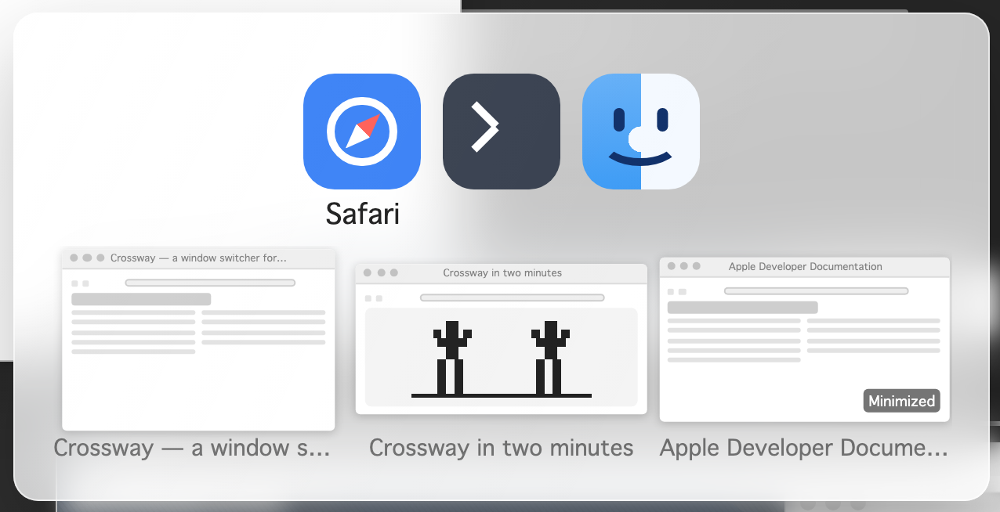

Crossway
A fast ⌘Tab window switcher for macOS. It replaces the built-in app switcher with one that understands windows, not just apps.
Free · Signed & notarized · macOS 14+ · Universal

Switch apps — exactly like the native switcher. Hold a beat longer and live previews of the highlighted app's windows bloom beneath it.
⌘`Switch windows — cycle through the highlighted app's windows and jump straight to the one you want, without touching the trackpad.
⌥⇥See everything — an exposé-style grid of every open window, with titles and Dock badges.
⌥`See this app — the same grid, scoped to the current app's windows.
Quick taps behave exactly like native macOS — Crossway's UI appears only when you hold. Arrow keys work on every surface, and the mouse is welcome too: hover selects, click activates.
- Download
Crossway.zipand unzip it (double-click). - Drag
Crossway.appinto your/Applicationsfolder. - Open it. Crossway lives in the menu bar — there is no Dock icon.
- Grant the two permissions it asks for in System Settings → Privacy & Security: Accessibility (to take over ⌘Tab and raise the window you pick) and Screen Recording (for the window previews).
- Relaunch Crossway after granting — the app walks you through this on first run.
Always download in a web browser, from this page or the Releases page. Files passed around through chat apps arrive with a quarantine flag that stops them from ever launching.
Requires macOS 14 (Sonoma) or later — Sequoia and Tahoe included. Apple Silicon and Intel (the app is universal).
Crossway records nothing and uploads nothing.
The app makes exactly one kind of network request, and only when you ask it to: menu bar → Check for Updates… fetches the latest release info from GitHub and tells you if a newer build is available. That is the entire network surface — no telemetry, no automatic or background checks, nothing uploaded, ever.
Every build is signed with an Apple Developer ID certificate and notarized by Apple, and installing an update is always your move: download in the browser, replace the app.
Crossway is free.
No nags, no unlock codes, no Pro tier. If it has earned a place in your muscle memory, you can buy the developer a coffee — the classic shareware deal: pay only if you love it.
Donations aren't wired up yet — check back soon.